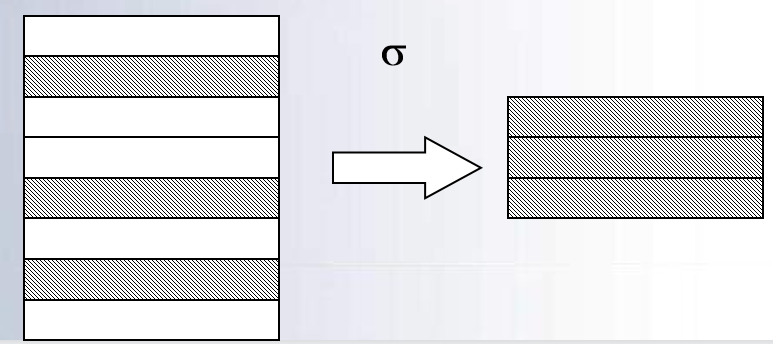

三、关系数据库
关系的定义
在关系理论是以集合代数理论为基础的，因此，我们可以用集合代数给出二维表的“关系”定义。先引入==域==和==笛卡尔积==的概念。
域(Domain)
- 域是一组具有==相同数据类型==的值的集合
- 自然数、整数、{男、女}、{0、1}
- 关系中用域表示属性的取值范围，例如
- D1={李丽，王平，刘伟}
- D2={男，女}
- D3={47，28，30}
- 其中D1，D2，D3为域名， 分别表示教师关系中姓名、性别、年龄的集合
笛卡尔积(Cartesian Product)
笛卡尔积(Cartesian Product)
- 定义3.1 给定一组集合D1，D2，…，Dn，它们可以是相同的。 D1， D2， …， Dn的笛卡尔积为：
- 所有域的所有值的一个组合，不能重复
元组(Tuple)
- 笛卡尔积中每一个元素(d1，d2，…，dn)叫做一个n元组(n-tuple)或简称元组
- 例(张清玫，计算机专业，李勇)、 (张清玫，计算机专业，刘晨)是元组
分量(Component)
- 笛卡尔积元素(d1，d2，…，dn)中的每一个值di叫做一个分量
- 例张清玫，计算机专业，李勇，刘晨是分量
关系
- 关系
-
定义3.2 D1×D2×…×Dn的任一个子集称为D1， D2， …， Dn上的一个关系。n叫做关系的目或度(degree)
-
元组和属性
-
关系中的每一行对应一个元组， 通常用t表示
-
每一列对应一个域。关系中的列称为属性，每一列用属性名表示 。\(t[A_i]\)表示元组t在属性Ai上的值
-
一元关系与二元关系
-
当n=1时，称该关系为一元关系（Unary relation）
-
当n=2时，称该关系为二元关系（Binary relation）
-
按照定义，关系可以是一个无限集合
-
由于笛卡尔积不满足交换律，所以
- 严格地说，==关系==是一种规范化了的==二维表==中行的集合，
- 当关系作为关系代数数据模型的数据结构时，需要作出补充和限定。
- 无限关系在数据库中是无意义的，因此限定关系代数数据模型中的关系必须是有限集合。
- 通过为关系的每列==增加一个属性名==的方法取消元组的有序性，即
关系模式和关系数据库
- 关系模式(Relation Schema)是对关系的描述，
- 该描述包括关系名、属性名、属性的类型和长度，以及属性间固有的数据关联关系
- 关系模式一般简记为关系名和属性名的集合
- \(R(A_1,A_2,\ldots,A_n)\)，或仅用关系名R表示。
- 如图书关系模式可描述为：
- 图书(书号，书名，作者，单价，出版社)
- 关系的值是元组的集合，称为关系
- 关系是对现实世界中事物在某一时刻状态的反映，关系的值是随时间在不断变化的
- ==关系模式和关系统称为关系==，通过上下文加以区别
键
- 为了区分不同元组，用其中一个或多个属性值标识，能够唯一标识元组的属性或属性组称为关系的键
- 关系中能够起标识作用的键称为==候选键==
- 在一个关系中，如果有多个候选键，选其中的一个键作为==主键(primary key)==
- 若关系的键由多个属性组成，称为联合键
- 关系的所有属性构成该关系的键，称为全键
- 键（key）
- 键是一个或多个属性组成的，能够唯一标识一个元组。
| 主键、候选键、超键的关系 | 具体例子 |
|---|---|
ref:link:关系模型中的键类型（候选键、超级键、主键、备用键和外来键） - GeeksforGeeks
完整性约束
-
关系模型的完整性规则是对关系的某种约束条件
-
为了维护数据库中数据与现实世界的一致性，对关系数据库的插入、删除和修改操作必须有一定的约束条件，这就是关系模型的三类完整性：
-
实体完整性
- 通常由关系系统自动支持
- 参照完整性
- 通常由关系系统自动支持
实体完整性和参照完整性是关系的两个不变性，应该由关系系统自动支持
-
用户定义的完整性
- 反映应用领域需要遵循的约束条件，体现了具体领域中的语义约束
- 用户定义后由系统支持
-
实体完整性约束（Entity Integrity Constraint ）是指==主键的值不能为空或部分为空==
- 实体完整性规则
- 若属性(指一个或一组属性)A是基本关系R的==主属性==，则属性A==不能取空值==
-
如果一个元组的键为空值，或部分为空，该元组将不可标识，不能表示任何实体，因而无意义
-
参照完整性约束（Reference Integrity Constraint ）是对==关系中作为外键的值的约束==，规定：
- 如果关系R1中属性A是另一个关系R2中的主键，则对于关系R1中的任一个元组在属性A上的值或者为空值，或者为另一个关系R2中某个元组的主键的值
- 设F是基本关系R的一个或一组属性，但不是关系R的键(码)。如果F与基本关系S的主键Ks相对应，则称F是基本关系R的==外码(外键)==
- 基本关系R称为参照关系(Referencing Relation)，基本关系S称为被参照关系(Referenced Relation)或目标关系
- 说明：关系R和S不一定是不同的关系
- S的主键\(K_s\)和R的外键F必须定义在同一个或组域上
-
外键并不一定要与相应的主键同名。
-
用关系来描述实体及实体间的联系，因此关系模型中存在着关系与关系间的引用
- 学生关系中每个元组的==“专业号”==只取下面两类值:
- ==空值==，表示尚未给该学生分配专业
- ==非空值==，该值必须==是专业关系中某个元组的“专业号”值==，表示该学生不可能分配到不存在的专业中
- 即学生关系中的某个属性的取值需要参照专业关系中的属性取值
| 被参照关系（主表） | 参照关系（从表） |
|---|---|
 |
关系代数
- 关系代数
-
一种抽象的查询语言，用对关系的运算来表达查询
-
关系代数运算的三个要素
-
运算对象：关系
-
运算结果：关系
-
运算符
-
按运算符的不同，关系代数运算的分类：
- 传统的集合运算
- 并、差、交、广义笛卡尔积
- 把关系看成元组的集合，以元组作为集合中元素来进行运算，其运算是从关系的“水平”方向即行的角度进行的
- 专门的关系运算
- 选择、投影、连接、除
- 不仅涉及行运算，也涉及列运算，这种运算是为数据库的应用而引进的特殊运算。
专门的关系运算
选择（Selection）
- 选择运算是关系上的一元运算，是从关系中选择满足一定条件的元组子集
- F是限定条件的布尔表达式，由逻辑算符\((\neg ,\vee ,\wedge )\)连接比较表达式组成
- 上式表示在关系R中选择使t(F)为真的所有元组
- 选择运算是从行的角度进行的运算
投影（Projection）
- 在模式R上的投影运算表示为
- 其中，\(\Pi\)是投影算符，X是模式R属性的子集，t[X]表示R中元组在属性集X上的值，或为元组t在X上的投影
- 从R中选择出若干属性列组成新的关系
- 投影操作主要是从列的角度进行运算
- 但投影之后不仅取消了原关系中的某些列，而且还可能取消某些元组（避免重复行）
| 选择运算是从行的角度进行的运算 | 投影操作主要是从列的角度进行运算 |
|---|---|
|  |  |
连接（Join）
- 连接运算是把二个关系中的元组按条件连接起来，形成一个新关系
- 条件连接
- 自然连接
- 条件连接也称\(\theta\)连接，是将二个关系中满足\(\theta\)条件的元组拼接起来形成新元组的集合。
- 设属性A和B分别是关系R和S上的属性，且定义在同一个域上，R和S的连接记为：
-
其中，\(\Join\)是连接符，\(A~\theta ~B\)为连接条件。\(\theta\)是比较符
-
条件连接
- 从R和S的笛卡尔积R×S中选取R关系在A属性组上的值与S关系在B属性组上值满足比较条件的元组
- 最常用的连接是二个属性值的相等比较
-
θ为“＝”的连接运算称为等值连接
-
自然连接（Natural join）
- 自然连接是一种特殊的等值连接；它要求两个关系中进行比较的分量必须是==相同的属性组==，并且在结果中==把重复的属性列去掉==
| pic.一般的连接操作是从行的角度进行运算 | comment |
|---|---|
 |
而自然连接还需要取消重复列，所以是同时从行和列的角度进行运算。 |
除运算（Division）
- 除法运算是一个二元运算，用表示
- 若\(R \div S\)，要求R和S有定义在同一域上的属性或属性组
- \(R \div S\)的结果生成一个新关系R’，R’的属性是R的属性中去掉与S具有公共域属性的其它属性
- 设R(X，Y)，S(Y)，R’(X)。则\(R \div S\)记为：
- 结果集是R的属性中去掉与S具有公共域属性的其它属性
- 举例说明除法运算的含义
| \(SC’\) | \(C'\) | $ C''$ | \(SC'\div C'\) | \(SC'\div C''\) |
|---|---|---|---|---|
 |
 |
|||
| 学生号班号表 | 班号表1 | 班号表2 | 选修了C1课的所有学生 | 同时选修了C2和C3课的所有学生 |
- 除操作是同时从行和列角度进行运算
对于上面的除运算也可以用下式表示： $$ R \div S = \Pi_X(R) - \Pi_X(\Pi_X(R)\Join S - R) $$ 上式中，\(X\)为R中除去与S属性相同的其余属性。
下面是一个别的例子，但用上面的公式做不了，具体来说就是应该从定义理解它，就是必须得是同时满足三条S表中的数据才能选出来如下：
| \(R\) | \(S\) | \(R\div S\) |
|---|---|---|
 |
 |
扩充的关系运算
外连接
- 连接运算是把二个关系中的元组按条件连接起来，结果为满足条件的元组集合，这样的连接称为内连接（inter join），还有一种连接称为外连接。
- 外连接（outer join）是对自然连接运算的扩展。外连接结果中除了满足连接条件的元组外还包含没有被连接的元组。
- 左外连接
- 左外连接的连接结果中包含了==关系R (左边关系)中====不满足连接条件==的元组，在这些元组==对应关系S属性上的值为空值==，记为：\(R\Join_L S\)
关系代数的一个例子
【例】查询至少选修了一门其直接先行课为5号课程的课程的学生姓名。
| 学生表Student | 课程表Course | 成绩表SC |
|---|---|---|
 |
关系代数： $$ \Pi_{Sname}(\sigma_{Cpno=5}(Course\Join Student \Join SC)) $$ 稍微优化一下（将操作移到每个表中去）： $$ \Pi_{Sname} ( \sigma_{Cpno=5}(Course) \Join SC \Join \Pi_{SNO,Sname}(Student) )\ \Rightarrow \Pi_{Sname} ( \Pi_{Sno}( \sigma_{Cpno=5}(Course)\Join SC ) \Join \Pi_{SNO,Sname}(Student) ) $$
- 用关系代数运算可以完成对数据的检索、插入和删除操作
- 查询：查询的表达能力是其中最重要的部分
- ==选择(select),==
- ==投影(project),==
- ==连接(join),==
- ==除(devide),==
- ==并(union),==
- ==差(difference),==
- ==交(intersection),==
- ==笛卡尔积等==
- 数据更新: 插入(insert),删除(delete),修改(update)
- 关系操作的特点
- 集合操作方式，操作的对象和结果都是集合
- 一次一集合
-
非关系数据模型的数据操作方式
- 一次一记录
-
在关系代数运算中，并、差、笛卡儿积、选择、投影是基本的关系代数运算，其它的运算可以由这些基本运算表示。如：
- 交运算可用差运算表示：\(R \cap S = R - (R-S)\)
- 连接运算可由选择和笛卡儿积表示：\(\mathop{R\Join S}\limits_{A~\theta~B} = \sigma_{A~\theta~B}(R \times S)\)
- 除运算可用下式表示：
-
上式中，X为R中除去与S属性相同的其余属性，注意到这里实际上对上面的公式做了修改，而得到的\(\Pi_X(R) \times \Pi_Y(S)\)的列名（模式）应该是和R是一致的才能做差集；
-
关系代数运算
- 并、差、交、笛卡尔积、投影、选择、连接、除
- 基本运算
- 并、差、笛卡尔积、投影、选择
- 交、连接、除法 ==可以用5种基本运算来表达==
-
引进它们并不增加语言的能力，但可以简化表达
-
关系代数表达式
- 关系代数运算经有限次复合后形成的式子